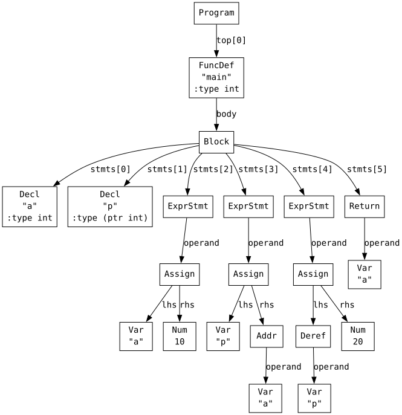
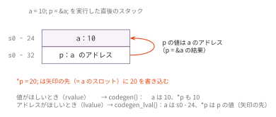

コマ7: lvalue / rvalue + ポインタ
今日のゴール
codegen_lval() を *p へ拡張し、& と * を実装する。
codegen() と codegen_lval() の分離そのものはコマ3 で済んでいる。
codegen(node) -> rvalue を計算し、値を a0 に置く
codegen_lval(node) -> lvalue のアドレスを計算し、アドレスを a0 に置くただしコマ3 の codegen_lval() が扱えるのは変数 'Var' だけで、
それ以外を渡すと lvalue でない式です で止まる。
この回で扱う *p = 20; は、変数ではない式を代入先に置く最初の例である。
| 見方 | 意味 | 例 |
|---|---|---|
| rvalue | 式を評価して得られる値 | a, *p, 1 + 2 |
| lvalue | 書き込み先として使える場所 | a, *p |
この回で新しくなるのは、この表の *p の列である。
codegen_lval() に 'Deref' を足し、codegen() に 'Addr' と 'Deref' を足す。
この回で扱う範囲
対象にする機能は、単純なポインタの読み書きに限定する。
| 種類 | 例 |
|---|---|
| アドレス取得 | &a |
| 間接参照 | *p |
| ポインタ経由の書き込み | *p = 20; |
| ポインタ引数 | swap(&x, &y); |
この回では、ポインタも整数もすべて8バイト値として扱う。 型サイズはコマ8、ポインタ演算はコマ9で扱う。
この回までの言語仕様（EBNF）
この回までに書けるプログラムの文法を、累積の形でまとめる。
記法と最終形の全体像は
language_spec.md の「形式文法（EBNF）」を参照。
stars ::= '*' /* 多段ポインタ int ** はコマ9 */
scalar_type ::= 'int' [ stars ] /* char はコマ8、struct はコマ11、void * はコマ12 */
obj_type ::= scalar_type
ret_type ::= scalar_type
| 'void'
program ::= external_decl { external_decl }
external_decl ::= func_proto
| func_def /* struct 定義はコマ12、グローバル変数はコマ13 */
var_decl ::= obj_type IDENT ';'
param ::= scalar_type IDENT
param_list ::= param { ',' param }
func_proto ::= ret_type IDENT '(' [ param_list ] ')' ';' /* '...' はコマ10 */
func_def ::= ret_type IDENT '(' [ param_list ] ')' func_body
func_body ::= '{' { var_decl } { stmt } '}'
stmt ::= expr_stmt
| block
| if_stmt
| while_stmt
| for_stmt
| 'break' ';'
| 'continue' ';'
| 'return' [ expr ] ';'
expr_stmt ::= [ expr ] ';'
block ::= '{' { stmt } '}'
if_stmt ::= 'if' '(' expr ')' stmt [ 'else' stmt ]
while_stmt ::= 'while' '(' expr ')' stmt
for_stmt ::= 'for' '(' [ expr ] ';' [ expr ] ';' [ expr ] ')' stmt
expr ::= assign_expr
assign_expr ::= unary_expr '=' assign_expr /* 右結合 */
| cond_expr
cond_expr ::= binary_expr [ '?' expr ':' cond_expr ] /* 右結合 */
binary_expr ::= unary_expr { bin_op unary_expr }
bin_op ::= '*' | '/' | '%' /* 論理 && || はコマ13 */
| '+' | '-'
| '<' | '>' | '<=' | '>='
| '==' | '!='
unary_expr ::= primary_expr /* 添字 [ ] と sizeof はコマ9、. -> はコマ12 */
| '-' unary_expr
| '*' unary_expr
| '&' unary_expr
| '++' unary_expr
| '--' unary_expr
primary_expr ::= INT_LITERAL
| IDENT '(' [ arg_list ] ')'
| IDENT
| '(' expr ')'
arg_list ::= assign_expr { ',' assign_expr }この回までの二項演算子の優先順位（高い順）:
| 優先順位 | 演算子 | 結合 |
|---|---|---|
| 1（高） | * / % |
左 |
| 2 | + - |
左 |
| 3 | < > <= >= |
左 |
| 4 | == != |
左 |
表の読み方はコマ1の「木の形は規則で決まっている」と
language_spec.md の「演算子」を参照。
代入の左辺の文法カテゴリが unary_expr であるため、*p = 20; は構文としてそのまま書ける。
どの unary_expr が実際に代入先になれるか（lvalue 制約）は構文ではなく意味解析の話である。
字句トークンの定義はどの回でも同じであるため、ここでは繰り返さない。
language_spec.md の「字句トークン」を参照。
AST を確認する
まず、& と * を含むプログラムがどのような AST になるか確認する。
python3 scaffold/parse_viewer.py sessions/07_lvalue_rvalue/tests/deref_write.cこのプログラムの内容は次の通り。
int main() {
int a;
int *p;
a = 10;
p = &a;
*p = 20;
return a;
}実行すると、次のようなS式が表示される。
(program
(funcdef "main" :type int (params)
(block (decl "a" :type int)
(decl "p" :type (ptr int))
(exprstmt
(assign (var "a") (num 10)))
(exprstmt
(assign (var "p")
(addr (var "a"))))
(exprstmt
(assign
(deref (var "p"))
(num 20)))
(return (var "a")))))
注目するノードは次の2つである。
| S式 | Node での表現 |
意味 |
|---|---|---|
(addr X) |
ND_ADDR, node.operand == X |
&X |
(deref X) |
ND_DEREF, node.operand == X |
*X |
p = &a; は、右辺に (addr (var "a")) を持つ代入である。
*p = 20; は、左辺に (deref (var "p")) を持つ代入である。
lvalue になれる式が増える
変数 a の2つの使い方（a = 10 の左辺はアドレス、return a; は値）は
コマ3 の「rvalue と lvalue」節で扱った。この回で増えるのは、
変数以外にも lvalue になれる式があるという点である。
| Cコード | lvalue になる式 | 書き込み先アドレスの求め方 |
|---|---|---|
a = 10; |
a（'Var'） |
s0 からのオフセットを足す（コマ3） |
*p = 20; |
*p（'Deref'） |
p を rvalue として評価した値がそのままアドレス |
*p のアドレスは、スタック上の位置を計算して作るのではなく、
p に入っている値をそのまま使う。ここが 'Var' との違いである。

p のスロットには a のアドレスが値として入っている。
*p を lvalue として使うときは、この値（矢印の先）がそのまま書き込み先アドレスになる。
codegen_lval() に 'Deref' を足す
codegen_lval(node) は、代入先として使える式のアドレスを a0 に入れる。
コマ3 で書いた 'Var' の分岐は、継承でそのまま引き継がれる（再掲）。
def codegen_lval_Var(self, node):
offset = self.lookup_var(node.name, node.line)
self.emit(f" addi a0, s0, {offset}")この回で足すのは 'Deref' の分岐である。
*p の場合は、p の値そのものが書き込み先アドレスなので、
node.operand を rvalue として評価するだけでよい。
def codegen_lval_Deref(self, node):
self.codegen(node.operand)*p = 20; では、まず p を rvalue として評価する。
その結果、a0 には p が指している先のアドレスが入る。
このアドレスがそのまま左辺の lvalue になる。
& のコード生成
&a は「a のアドレスを値として得る」式である。
したがって、& の中身を lvalue として評価すればよい。
def codegen_Addr(self, node):
self.codegen_lval(node.operand)p = &a; の流れは次のようになる。
1. 左辺 p のアドレスを codegen_lval(var p) で求める
2. 右辺 &a を codegen(addr(var a)) で求める
3. a のアドレスを p のスロットに sd する* のコード生成
*p は、rvalue として読む場合と lvalue として使う場合で処理が違う。
| Cコード | 意味 | 処理 |
|---|---|---|
return *p; |
p の指す先の値を読む |
codegen(p) の後に ld a0, 0(a0) |
*p = 20; |
p の指す先に書き込む |
codegen_lval(deref p) でアドレスだけ作る |
rvalue としての *p は次のように生成する。
def codegen_Deref(self, node):
self.codegen(node.operand)
self.emit(" ld a0, 0(a0)")代入は書き換えなくてよい
代入 lhs = rhs では、左辺は lvalue、右辺は rvalue として扱う。
コマ3 の codegen_Assign() は、すでにこの形で書かれている。
1. self.codegen_lval(node.lhs) で書き込み先アドレスを求める
2. アドレスをスタックへ退避する
3. self.codegen(node.rhs) で書き込む値を求める
4. 退避したアドレスを a1 に戻す
5. sd a0, 0(a1) で書き込む左辺に codegen() ではなく codegen_lval() を使ってあるので、
codegen_lval() に 'Deref' が足されただけで *p = 20; が動く。
codegen_Assign() 自体には手を入れない。
コマ3 の時点でこの形にしておく理由が、ここで効いてくる。
関数引数としてのポインタ
コマ6で関数呼び出しを実装しているため、ポインタを引数として渡す仕組み自体は新しくない。
&x を評価した結果はアドレス値なので、その値を通常の引数と同じように a0 や a1 に渡せばよい。
int swap(int *a, int *b) {
int tmp;
tmp = *a;
*a = *b;
*b = tmp;
return 0;
}
int main() {
int x;
int y;
x = 3;
y = 7;
swap(&x, &y);
return x + y * 10;
}swap(&x, &y) では、&x と &y がそれぞれアドレス値として評価され、関数に渡される。
関数側では *a と *b により、呼び出し元の x と y を読み書きできる。
戻り値のない関数: void
上の swap は値を返す必要がないのに return 0; と書いている。
呼び出し元を書き換えるのが目的で、返す値がないからである。
こういう関数の戻り値型には void を書く。
void swap(int *a, int *b) {
int t;
t = *a;
*a = *b;
*b = t;
}戻り値型に void が書けるのは関数だけで、void の変数・仮引数・フィールドは書けない
（void * というポインタは別で、これはコマ12 で扱う）。
void 関数の中では次の 2 つが使える。
| 書き方 | 意味 |
|---|---|
return; |
そこで関数を抜ける（値は返さない） |
| 本体の末尾に到達 | そのまま関数を抜ける |
コード生成に新しい要素はない。Return ノードの operand が None のときは
戻り値の計算を飛ばして共通エピローグ（コマ4 の _ret_label）へジャンプするだけである。
a0 に何を置くかは決めなくてよい。void 関数の戻り値は使えないので、
呼び出し側が a0 を読むことはない。
ポインタが使えるようになって初めて、値を返さない関数に意味が出る （コマ6 までは、返り値以外に呼び出し元へ結果を伝える手段がなかった）。 そのためこの回で扱う。
編集するファイル
mycc.py
importlib でコマ6 の Codegen06 を継承した Codegen07 に、以下の3つを実装する。
codegen_lval() と codegen() のディスパッチはスケルトンにあらかじめ書かれている。
| 実装対象 | 役割 |
|---|---|
codegen_lval_Deref(node) |
self.codegen(node.operand) でアドレスを得る |
codegen_Addr(node) |
self.codegen_lval(node.operand) でアドレスを値として返す |
codegen_Deref(node) |
self.codegen(node.operand) の後 self.emit(" ld a0, 0(a0)") |
codegen_lval_Var(node) と codegen_Assign(node) はコマ3 で実装済みで、
継承でそのまま働く。この回で書き直すものは無い。
実装手順
- スケルトンの
Codegen07がCodegen06をimportlibで継承していることを確認する codegen_lval_Deref(node)を実装するcodegen_Addr(node)を実装する- rvalue としての
codegen_Deref(node)を実装する - コマ3 の
codegen_Assign()が左辺にself.codegen_lval()を使っていることを確認する（*p = 20;はこれで動く） swap.cまで通ることを確認するvoid_func.cを通す（ReturnのoperandがNoneのとき、値を計算せずエピローグへ飛ぶ）
tests/
| ファイル | 内容 | 期待値 |
|---|---|---|
deref_read.c |
p = &x; return *p; |
42 |
deref_write.c |
*p = 20; return a; |
20 |
ptr_ops.c |
ポインタ先の値を読み書きする | 55 |
swap.c |
ポインタ引数で値を入れ替える | 37 |
void_func.c |
戻り値のない関数（return; と末尾到達の両方） |
15 |
テスト
python3 scaffold/test_runner.py sessions/07_lvalue_rvaluetests/deref_read.c がコンパイルでき、終了コード 42 になれば基本形は成功。
個別に動かす場合は、次のようにする。
python3 sessions/07_lvalue_rvalue/mycc.py sessions/07_lvalue_rvalue/tests/deref_read.c \
| riscv64-linux-gnu-gcc -x assembler -static - -o out
qemu-riscv64 ./out
echo $?注意
この回では、ポインタも整数もすべて8バイト値として扱う。
読み書きは常に ld / sd でよい。
型サイズに応じたロード・ストアはコマ8、ポインタ演算はコマ9 で扱う。
codegen_lval() を呼んでよいのは、書き込み先になれるノードだけである。
この回では変数 a と間接参照 *p の2つで、&(a + 1) のような式にアドレスはない。
void 関数は戻り値を持たないので、a0 に何を残すかを決める必要はない。
呼び出し側が void 関数の値を使うことはない。
codegen() と codegen_lval() のどちらが呼ばれているかを1命令ずつ確認したいときは、RV64 シミュレータ に生成アセンブリを貼り付ける。
この回の完成形に相当する OCaml 版参考実装が ../../workbook/ocaml/README.md にある。完成相当の実装なので、まず自分の実装方針を検討してから確認すること。